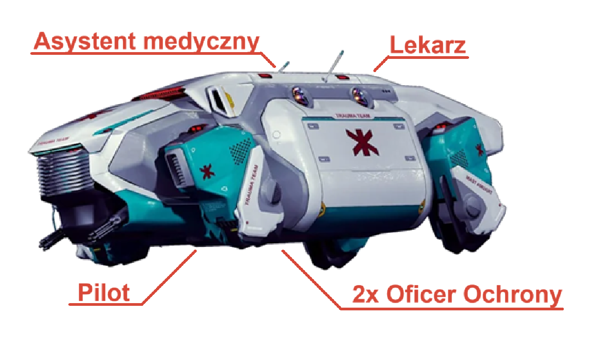

Klasyfikacja Obrażeń
W miarę otrzymywania obrażeń Postaci przekraczają progi Klasyfikacji Obrażeń, ostatecznie doznając obrażeń, które negatywnie wpływają na skuteczność Postaci. Każda nowa Klasyfikacja Obrażeń zastępuje poprzedni Efekt Zranienia Klasyfikacji Obrażeń.
Klasyfikacja Obrażeń postaci określana jest na podstawie pozostałych HP.
| Klasyfikacja Obrażeń | Próg | Efekty Zranienia | DV Stabilizacji |
|---|---|---|---|
|
Lekkie
Obrażenia |
Mniej niż Pełne HP | Brak | DV10 |
|
Poważne
Obrażenia |
Mniej niż 1/2 HP (zaokrąglone w górę) |
-2 do wszystkich Akcji | DV13 |
|
Śmiertelne
Obrażenia |
Mniej niż 1 HP |
Musi wykonać Death Save na początku każdej tury. Śmiertelnie ranne postaci otrzymują Krytyczne Obrażenia za każdym razem, gdy zostaną zranione Atakiem Wręcz lub Atakiem Dystansowym. Dodatkowo ich Death Save Penalty wzrasta o 1. |
DV15, aby przywrócić 1 HP i stracić przytomność na 1 minutę |
| Śmierć | Jeden nieudany Death Save | Śmierć | Już nie wróci |
Krytyczne Obrażenia
Za każdym razem, gdy podczas rzutu na obrażenia od Ataku Wręcz lub Ataku Dystansowego na dwóch lub wiecej kostek wypadnie 6 - Postać zadaje Obrażenia Krytyczne. Obrażenia Krytyczne wywołują Urazy.
Rzucaj 2d6 do momentu uzyskania Urazu, którego Postać aktualnie nie doznaje. W zależności, czy Postać celowała w ciało lub w głowę, odczytaj wynik z odpowiedniej Tabeli Urazów.
| Rzut (2d6) |
Uraz Ciała | Efekty Urazu | Szybki Opatrunek |
Leczenie |
|---|---|---|---|---|
|
2
|
Utrata ręki | Postać traci rękę. Każdy trzymany w tej ręce przedmiot upada na ziemię.Bazowe Death Save Penalty wzrasta o 1. | --- | Chirurgia DV17 |
|
3
|
Utrata dłoni | Postać traci dłoń. Każdy trzymany w tej dłoni przedmiot upada na ziemię.Bazowe Death Save Penalty wzrasta o 1. | --- | Chirurgia DV17 |
|
4
|
Zapadnięcie płuca | -2 do MOVE (minimum 1). Bazowe Death Save Penalty wzrasta o 1. | Ratownik DV15 | Chirurgia DV15 |
|
5
|
Połamanie żeber | Jeżeli podczas tury Postać pokona pieszo więcej niż 4m odległości, ponownie otrzymuje dodatkowe obrażenia z Urazów. | Ratownik DV13 | Ratownik DV15 lub Chirurgia DV13 |
|
6
|
Złamanie ręki | Postać nie może używać złamanej ręki. Każdy trzymany w tej ręce przedmiot upada na ziemię. | Ratownik DV13 | Ratownik DV15 lub Chirurgia DV13 |
|
7
|
Ciało obce | Jeżeli podczas tury Postać pokona pieszo więcej niż 4m odległości, ponownie otrzymuje dodatkowe obrażenia z Urazów. | Pierwsza pomoc DV13 lub Ratownik DV13 | Szybki Opatrunek całkowicie usuwa Efekt |
|
8
|
Złamanie nogi | -4 do MOVE (minimum 1). | Ratownik DV13 | Ratownik DV15 lub Chirurgia DV13 |
|
9
|
Zerwanie mięśnia | -2 do Ataków Wręcz. | Pierwsza pomoc DV13 lub Ratownik DV13 | Szybki Opatrunek całkowicie usuwa Efekt |
|
10
|
Uraz kręgosłupa | W następnej turze Postać nie może wykonać akcji poza ruchem. Bazowe Death Save Penalty wzrasta o 1. | Ratownik DV15 | Chirurgia DV15 |
|
11
|
Zmiażdżenie palców | -4 do każdej Akcji z użyciem tej dłoni. | Ratownik DV13 | Chirurgia DV15 |
|
12
|
Utrata nogi | Postać traci nogę. -6 do MOVE (minimum 1). Postać nie może robić uników. Bazowe Death Save Penalty wzrasta o 1. | --- | Chirurgia DV17 |
| Rzut (2d6) |
Uraz Głowy | Efekty Urazu | Szybki Opatrunek |
Leczenie |
|---|---|---|---|---|
|
2
|
Utrata Oka | Postać traci Oko. -4 do Ataków Dystansowych i Perception Checks z użyciem wzroku.Bazowe Death Save Penalty wzrasta o 1. | --- | Chirurgia DV17 |
|
3
|
Uraz mózgu | -2 do wszystkich Akcji. Bazowe Death Save Penalty wzrasta o 1. | --- | Chirurgia DV17 |
|
4
|
Uszkodzenie oka | -2 do Ataków Dystansowych i Perception Checks z użyciem wzroku. Bazowe Death Save Penalty wzrasta o 1. | Ratownik DV15 | Chirurgia DV13 |
|
5
|
Utrata przytomności | -2 do wszystkich Akcji. | Pierwsza pomoc DV13 lub Ratownik DV13 | Szybki Opatrunek całkowicie usuwa Efekt |
|
6
|
Złamanie szczęki | -4 do wszystkich akcji z użyciem mowy. | Ratownik DV13 | Ratownik DV13 lub Chirurgia DV13 |
|
7
|
Ciało obce | Jeżeli podczas tury Postać pokona pieszo więcej niż 4m odległości, ponownie otrzymuje dodatkowe obrażenia z Urazów. | Pierwsza pomoc DV13 lub Ratownik DV13 | Szybki Opatrunek całkowicie usuwa Efekt |
|
8
|
Uraz szyji | Bazowe Death Save Penalty wzrasta o 1. | Ratownik DV13 | Ratownik DV13 lub Chirurgia DV13 |
|
9
|
Rozbicie czaszki | Strzały skierowane w głowę postaci zwiększają obrażenia 3-krotnie, a nie 2-krotnie.Bazowe Death Save Penalty wzrasta o 1. | Ratownik DV15 | Ratownik DV15 lub Chirurgia DV15 |
|
10
|
Uszkodzenie ucha | Jeżeli podczas tury Postać pokona pieszo więcej niż 4m odległości, w następnej turze nie może się ruszać. -2 do Perception Checks z użyciem słuchu. | Ratownik DV13 | Chirurgia DV13 |
|
11
|
Zmiażdżenie tchawicy | Postać nie może mówić. Bazowe Death Save Penalty wzrasta o 1. | --- | Chirurgia DV15 |
|
12
|
Utrata ucha | Postać traci ucho. Jeżeli podczas tury Postać pokona pieszo więcej niż 4m odległości, w następnej turze nie może się ruszać. -4 do Perception Checks z użyciem słuchu. Bazowe Death Save Penalty wzrasta o 1. | --- | Chirurgia DV17 |
Śmiertelne Obrażenia
Postacie śmiertelnie ranne doznają obrażeń krytycznych za każdym razem, gdy zostaną zranione w wyniku ataku. Dodatkowo ich kara do rzutu obronnego przed śmiercią wzrasta o 1.
Death Saves
Na początku każdej tury, w której Postać jest śmiertelnie ranny, musisz wykonać Death Save. Rzuć d10. Jeśli wyrzucisz mniej niż BODY, żyjesz i możesz normalnie wykonać swoją turę. Jeżeli wyrzucisz 10, Postać automatycznie ponosi porażkę. Po każdym udanym Death Save, rośnie Death Save Penalty, to znaczy każdy kolejny Death Save jest trudniejszy o +1. Death Save Penalty wzrasta do momentu, aż stan Postaci zostanie ustabilizowany na poziomie 1HP. Po ustabilizowaniu stanu Postaci Death Save Penalty resetuje się.
Jeżeli podczas wykonywania rzutu na Death Save Postać odniesie porażkę, umiera.
I stamtąd już nie ma powrotu.
Stabilizacja i leczenie
Zakładając, że Postać nie zakończyła swojego życia, będzie chciała jak najszybciej wrócić na ulicę. Aby rozpocząć proces naturalnego leczenia, stan Postaci musi zostać wcześniej ustabilizowany.
DV Stabilizacji celu zależy od jego Klasyfikacji Obrażeń:
Lekkie Obrażenia: DV10
Poważne Obrażenia: DV13
Śmiertelne Obrażenia: DV15
Stabilizacja to Akcja i wymaga rzutu: TECH + Pierwsza Pomoc/Ratownik + 1d10.
Po udanej stabilizacji, Postać będzie odzyskiwać HP równe swojemy BODY, za każde 24 godziny, które Postać przeznaczy na odpoczynek. Pasywne leczenie nie będzie przerwane jeżeli Postać będzie podejmować się lekkich prac. W przeciwnym przypadku, jeżeli Postać nie będzie odpoczywać, na koniec dnia może nie odzyskać punktów HP, a w ekstremalnych przypadkach może wymagać ponownego ustabilizowania.
Ustabilizowana Postać, która wcześniej odniosła śmiertelne obrażenia, jest automatycznie leczona do 1HP i staje się nieprzytomna. Utrata przytomności zawsze trwa minutę. Jeżeli nieprzytomna Postać zostanie zaatakowana i zakwalifikuje się do Śmiertelnych Obrażeń nadal musi rzucać na Death Save.
Istnieją cztery umiejętności związane z leczeniem: Cybertech, Pierwsza pomoc, Ratownik (x2) i Chirurgia.
| Umiejętnosć | Efekt | Uwagi |
|---|---|---|
|
Cybertech
|
Nie umożliwia stabilizacji. | Może zostać użyta do Szybkiego opatrunku i leczenia Urazów elementów cybernetycznych, które zastąpiły mięso. |
|
Pierwsza pomoc
|
Umożliwia stabilizację i Szybki opatrunek prostych urazów. | Dostępna dla każdej Postaci z minimalną inwestycją punktową, ponieważ każda Postać ma co najmniej 2 punkty w tej umiejętności. |
|
Ratownik (x2)
|
Umożliwia stabilizację, Szybki opatrunek oraz leczenie wiekszosci Urazów. | Dostępna dla każdej postaci, ale koszt levelowania jest dwukrotnie większy. |
|
Chirurgia
|
Umożliwia leczenie nawet najcięższych Urazów. | Dostępna tylko dla klasy Medtech poprzez umiejętność specjalną: Medycyna. |
Krytycznymi obrażeniami można zająć się na dwa sposoby: poprzez Szybki Opatrunek oraz Leczenie. W zależności jak poważny jest uraz, niektóre sposoby mogą nie być dostępne.
Szybki opatrunek usunie efekt urazu na 24 godziny.
Każda próba zajmuje minutę. Postać może założyć Szybki opatrunek na siebie.
Leczenie usunie uraz na stałe.
Każda próba zajmuje 4 godziny. Postać nie może uleczyć siebie.
Jeżeli mięsne kończyny są zastąpione wszczepami Postać nadal ponosi wszystkie efekty Urazów. Szybki opatrunek oraz Leczenie może zostać wykonane z użyciem umiejętności Cybertech. DV i czas przeprowadzenia czynności pozostaje taki sam.
Silver
w tym VAT. Plan roczny rozliczany co miesiąc
Ekstrakcja z miejsca zdarzenia, stabilizacja stanu pacjenta i transport do najbliższej placówki medycznej. Zabiegi chirurgiczne są dodatkowo płatne.
Po otrzymaniu zgłoszenia, na miejsce zdarzenia kierowana jest najblizsza wolna jednostka.
Usługa obejmuje teren Night City. W strefach wysokiego ryzyka wymagana jest dodatkowa opłata.
Executive
w tym VAT. Plan roczny rozliczany co miesiąc
Ekstrakcja z miejsca zdarzenia, stabilizacja stanu pacjenta i transport do wybranej placówki medycznej. Zabiegi chirurgiczne są nieodpłatne.
Zgłoszenie traktowane jest priorytetowo, na miejsce zdarzenia kierowana jest najblizsza jednostka.
Usługa obejmuje teren Night City bez względu na strefę ryzyka.
Oba pakiety można transferować na zasadzie 1:1, to znaczy, że Postać może użyć swojego pakietu na użytek kogoś innego, zakładając, że Postać nie użyła pakietu na sobie. Pakiet nie może zostać wykorzystany na kilka osób.
Zapisanie Karty Trauma Team na swoim Wirtualnym Asystencie, który jest połączony z biomonitorem, pozwoli Asystentowi na automatyczne wezwanie Ambulansu Trauma Team bez zużywania Akcji. Wezwanie następuje kiedy HP jest niższe niż BODY, albo kiedy Postać utraci część ciała.
Nasza flota
Załoga Ambulansu Trauma Team składa się z pięciu członków: Lekarza, Asytenta medycznego, Pilota i dwóch Oficerów Ochrony. Sam ambulans to opancerzona AV-4 uzbrojona w Tsunami Arms Helix.
Szpital
Na przestrzeni ostatnich lat przełomy w medycynie doprowadziły do znaczącego obniżenia kosztów i czasu trwania leczenia. Kiedy Postać jest przyjmowana w szpitalu zostaje wyleczona ze wszystkich urazów. Koszt leczenia zależny jest od wartości DV najpoważniejszego urazu.
| DV | Koszt |
|---|---|
| DV17 lub więcej | 1000 €$ |
| DV15 | 500 €$ |
| DV13 | 100 €$ |
| DV10 | 50 €$ |
Bodybank
Na początku wieku opracowano w Biotechnice sposób na klonowanie tkanek. W czasie Czwartej Wojny Korporacyjnej upadł biznes sprzedaży i przemytu organów na czarnym rynku przez co, po raz pierwszy w historii pozyskiwania organów, ludzie stali się mniej warci martwi niż żywi . Z tego powodu koszt wymiany mięsnej części ciała jest wpisany w cenę leczenia. Jest możliwość wymiany na swoją, ale najpierw musi zostać wyhodowana, a przechowywanie kosztuje 50 €$ za każdą przechowywana część ciała.
Wszczepy z ulicy
Wszczepy odzyskane z osób, które już ich nie będą używać, mają wartość odsprzedaży pod warunkiem, że zostały pozyskane w odpowiedni sposób. Tylko Medtech jest w stanie pozyskać wszczepy bez uszkodzenia ich. Jednakże uszkodzone wszczepy można naprawić używając umiejętności Cybertech. DV dla obu jest równe DV instalacji wsczepów i zajmuje to 4h. Przy nieudanej naprawie wszczep zostaje zniszczony i zabiera to 2h.
Postać nie może sama sobie instalować wszczepów, chyba, że dostępność instalacji jest na poziomie Galerii handlowej.
| Dostępność | DV | Koszt |
|---|---|---|
| Galeria handlowa | DV13 | 100 €$ |
| Przychodnia | DV15 | 500 €$ |
| Szpital | DV17 | 1000 €$ |
Bodysculpting
Bodysculpting to proces zmiany swojego wyglądu poprzez wszczepy. Nie powoduje utraty człowieczeństwa i na pierwszy rzut oka nie można odróżnić osoby, która poddała się takim zabiegom od naturalnie uformowanej osoby.
Egzotyczny bodysculpting sprawia, że wygląda się nieziemsko z tą różnicą, że "nieziemsko" oznacza "jak z innej plamnety". Można sobie przyczepić kocie wąsy, tygrysie pazury, koputa, czółki, futro, płetwy, macki i cokolwiek sobie dusza zapragnie. Takie zabiegi jednakże powodują utratę człowieczeństwa w jednostce im poddanej.
Postać nie może przeprowadzić sama na sobie zabiegu bodysculptingu, jednakże utalentowany Medtech może przeprowadzić go na pacjencie. Procedura zajmuje 4h. W przypadku niepowodzenia materiały są niszczone i całość zajmuje 2h.
| Bodysculpting | Dostępność | Koszt | Utrata człowieczeństwa | DV |
|---|---|---|---|---|
| Standard | Przychodnia | 500 €$ | --- | DV15: Materiały za 500 €$ |
| Exotic | Szpital | 1000 €$ | 4d6 | DV17: Materiały za 500 €$ |
Narkotyki
Zażycie narkotyków wymaga Akcji. Jeżeli cel nie chce ich zażyć wymagany jest Atak Wręcz w celu determinacji, czy cel je zażyje.
Zaraz po zażyciu dawki na Postać wpływa podstawowy efekt narkotyku. Kiedy podstawowy efekt się skończy Postać musi zmierzyć się z efektem dodatkowym poprzez rzut WILL + Resist Torture/Drugs + 1d10. Efekty dodatkowe są trwałe i wymagają terapii, żeby ich się pozbyć. Zażywanie kilku dawek zwielokrotnia długosć działania podstawowego efektu.
| Nazwa | Koszt dawki | Podstawowy efekt | Dodatkowy efekt | DV |
|---|---|---|---|---|
| Black Lace | 50€$ | Czas działania: 24h. 2d6 HL (po skończeniu efektu Postać odzyskuje HL). Postać ignoruje efekt Poważnych Obrażeń | HL nie jest odzyskiwane. Postać uzależnia się. -2 do REF jeżeli postać nie jest pod wpływem podstawowego efektu. | DV17 |
| Blue Glass | 20€$ | Czas działania: 4h. Co jakiś czas postać doznaje silnych halucynacji (zależne od GM), postać traci możliwość wykonania Akcji. | Postać uzależnia się. Halucynacje występują mniej więcej raz na godzinę. Podczas trwania podstawowego efektu, halucynacje nie występują. | DV15 |
| Boost | 50€$ | Czas działania: 24h. +2 do INT. | Postać uzależnia się. Stałe -2 do INT. | DV17 |
| Smash | 10€$ | Czas działania: 4h. +2 do Tańca, Akrobatyki, Rozmowy, Percepcji, Perswazji i Aktorstwa. | Postać uzależnia się. -2 do Tańca, Akrobatyki, Rozmowy, Percepcji, Perswazji i Aktorstwa. Okazjonalne potrzeby niszczenia. | DV15 |
| Synthcoke | 20€$ | Czas działania: 4h. +1 do REF. Okazjonalne napady paranoi. | Postać uzależnia się. -2 do REF jeżeli postać nie jest pod wpływem podstawowego efektu. Okazjonalne napady paranoi. | DV15 |
Terapia
Empatia to statystyka określająca ogólne nastawianie do świata Postaci. Za każdy punkt EMP Postać dostaje 10 punktów człowieczeństwa. Kiedy postać dozna utraty człowieczeństwa (HL) i cyfra dziesiątek zmieni się, efektywne EMP jest odczytywane jako ta cyfra dziesiątek.
By zmitygować HL Postać może udać się na terapię. Terapia to intensywne leczenie trwające tydzień. Postać poddająca się terapii (oraz lekarz) nie może w tym czasie robić nic innego. Lekarzem może być Postać o klasie Medtech, ale nie może przeprowadzić terapii na sobie.
Rzut: TECH + Medycyna + 1d10
Na koniec terapii sprawdza się, czy terapia pomogła. Jeżeli rzut był nieudany leki i czas zostają stracone. Leki pochodzą od Biotechniki i tylko tam mozna je zdobyć. Jeżeli pacjent śpi w szpitalu to płaci dodatkowo 100 €$ za noc.
| Terapia | Koszt | Efekt | DV |
|---|---|---|---|
| Uzależnienie | 1000 €$ | Pacjent jest wolny odjednego uzależnienia. Przez rok od terapii rzut na dodatkowy efekt narkotyku jest automatycznie nieudany. | DV15: Materiały za 500 €$ |
| Zwykłe HL | 500 €$ | Pacjent odzyskuje 2d6 człowieczeństwa. | DV15: Materiały za 100 €$ |
| Silne HL | 1000 €$ | Pacjent odzyskuje 4d6 człowieczeństwa. | DV17: Materiały za 500 €$ |
Człowieczeństwo nie może zostać w pełni odzyskane bez pozbycia się wszystkich wszczepów. Każdy wszczep obniża maksymalne człowieczeństwo o 2. Każdy wszczep typu bogware obniża maksymalne człowieczeństwo o 4. Wszczepy, których HL przy instalacji jest równe 0, nie obniżają maksymalnego człowieczeństwa.
Cyberpsychoza
Cyberpsychoza to ekstremalne zaburzenie psychiczne spowodowane nadmierną ilością wszczepionych modyfikacji cybernetycznych, które stopniowo odczłowieczają użytkownika, prowadząc do utraty empatii i zdolności do prawidłowego postrzegania rzeczywistości.
Utrata człowieczeństwa jest powodowana przez instalowanie wszczepów. Każdy wszczep ma swój koszt opisany jako HL. Ale instalacja wszczepów to nie jedyny sposób na utratę człowieczeństwa. Podobnie działają zmiany psychiczne wywołane przez ekstremalne sytuacje.
| Typ | Przykład | HL |
|---|---|---|
| Traumatyczny incydent fizyczny | Tortury | 1d6 |
| Traumatyczny incydent psychiczny | Bycie świadkiem szczególnie przerażającej śmierci, okaleczenia itp. | 1d6 |
| Długotrwały stres | Porwanie, uwięzienie, długotrwała przemoc. | 2d6 |
| Długotrwały stres środowiskowy | Głód, uwięzienie w strefie wojny itp. | 2d6 |
Psychologia zająca:
- Przesadne poczucie własnej wartości
- Potrzeba stymulacji
- Spryt i manipulacja
- Brak wyrzutów sumienia lub poczucia winy
- Bezduszność i brak empatii
- Słaba kontrola nad sobą
- Impulsywność
- Nieumiejętność brania odpowiedzialności
- Wszechstronność kryminalna
Zasady cyberpsychozy:
- Empatia równa 1
- Postać przejawia przynajmniej trzy cechy z Psychologii zająca.
- Empatia równa 0
- Postać przejawia przynajmniej pięć cech z Psychologii zająca.
- Empatia równa 0 i ujemne człowieczeństwo
- Postać jest przejmowana przez GM, który prowadzi ją tak, by wyrządzić jak najwięcej szkód.
Agresywni cyberpsychopaci, którzy zagrażają bezpieczeństwu publicznemu są pacyfikowani przez specjalne jednostki porządku publicznego takie jak C-SWAT i MaxTac.